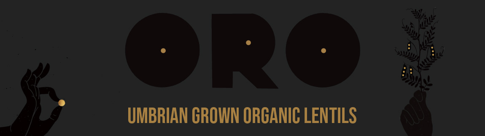

ORO
This project was for a competition for Minerva. The brief was name and brand a product that could be sold to aid those effected by the earthquakes in central Italy. Research and find produce from the region that you can package and design, and raise money for the local community. Also considering bringing the brand off pack in the digital world as well as considering being a premium product.
Umbria is a region of central Italy which was badly effected by the earthquakes. They are world-renowned for their lentils which are tiny in size with a delicate nutty flavor. The smaller the lentil the more precious they are. These lentils are known as the gold of Umbria which is what this lentil packaging design is aiming to celebrate.
ORO is the Italian translation for gold. Gold is emphasized on the packaging with gold foiling which contrasts the black spot vanish I have used. The design idea highlight the tiny precious lentils which surround the packaging. I thought it was important to portray how wonderful and important these lentils are as well as telling the story of the earthquake. I did this though a handwritten poem I wrote.